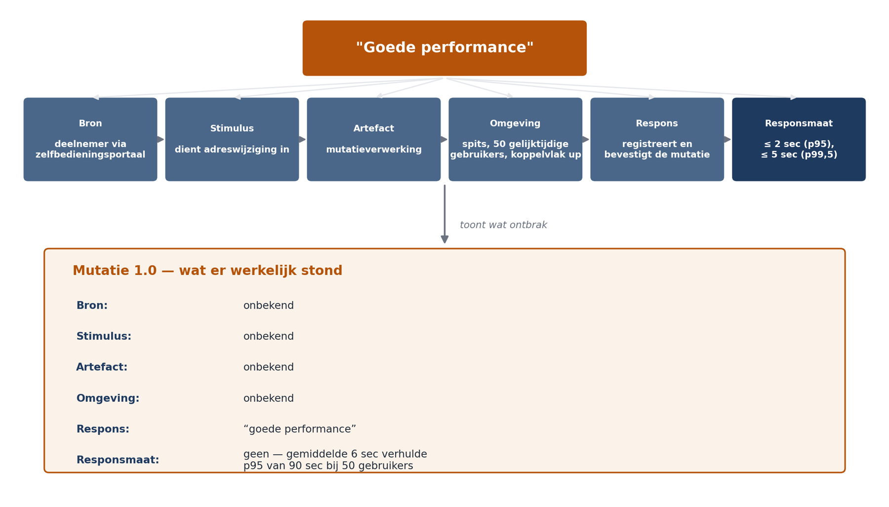

Deel 2 — Van eisen naar architectuur
Deelnemersreader
Cursus Softwarearchitectuur · Niveau 1 (CPSA-F) · Deel 2 van 10
Positionering
Voorbereiding op iSAQB® CPSA-F. Geen vervanging van het officiële curriculum en examenmateriaal van het iSAQB. Technologieneutraal; arc42 + C4 als referentienotatie, Structurizr als referentietool. Zelfstandig leesbaar; kruisverwijzingen naar de Ductus-cursus Business & Enterprise Architectuur zijn aangeduid met ↗ EA en zijn een toevoeging, geen voorwaarde.
Leerdoelen van dit deel
Na dit deel kunt u:
- de invloedsfactoren op een architectuur systematisch inventariseren en onderscheiden in eisen, randvoorwaarden en aannames;
- uitleggen waarom functionele eisen zelden de architectuur bepalen en kwaliteitseisen vrijwel altijd;
- het kwaliteitsmodel ISO 25010 gebruiken als checklist, en de beperkingen daarvan benoemen;
- een kwaliteitsscenario opstellen in zes delen, en beoordelen of een gegeven scenario meetbaar is;
- een kwaliteitsboom bouwen en prioriteren langs twee assen (belang en risico);
- de belangrijkste conflicten tussen kwaliteitsattributen benoemen en een trade-off expliciet formuleren;
- bevinding B2 uit de post-mortem Mutatie 1.0 sluiten.
Dekking CPSA-F: dit deel dekt de leerdoelen over invloedsfactoren, randvoorwaarden en kwaliteitseisen, en bereidt voor op de behandeling van kwaliteitstactieken (deel 6) en architectuurevaluatie (deel 9).
2.1 Terugblik: waar we vandaan komen
In deel 1 stelden we vast dat architectuur het middel is waarmee kwaliteitseisen worden gerealiseerd. Dat is een prettige zin, maar hij is leeg zolang niemand weet wat de kwaliteitseisen zijn.
Dat was precies de situatie in Mutatie 1.0. De aanbesteding vroeg om:
“Het systeem dient te beschikken over goede performance, hoge beschikbaarheid en een toekomstvaste opzet die aansluit bij de moderne standaarden in de markt.”
Drie termen, nul eisen. Er is geen enkele manier waarop een leverancier had kunnen aantonen dat hij hieraan voldeed, en — belangrijker — geen enkele manier waarop Meridiaan had kunnen aantonen dat hij dat níét deed. Toen na veertien maanden bleek dat de doorlooptijd bij vijftig gelijktijdige gebruikers vijftienmaal hoger lag dan bij één, ontstond de discussie die altijd ontstaat: is 90 seconden “goede performance”? Er was geen document dat die vraag beantwoordde.
Dat is bevinding B2. Dit deel sluit hem.

2.2 Invloedsfactoren: wat vormt een architectuur?
Een architectuur ontstaat niet uit eisen alleen. Zij is de resultante van een breder veld dat wij invloedsfactoren noemen. Het loont om die systematisch te inventariseren, omdat de factoren die u niet opschrijft, wel werken maar niet worden afgewogen.
Vier categorieën:
1. Eisen
Functionele eisen — wat het systeem moet doen. Een adresmutatie registreren, een scheiding verwerken, een statusoverzicht tonen.
Kwaliteitseisen — hoe goed het dat moet doen. Hoe snel, hoe betrouwbaar, hoe veilig, hoe aanpasbaar, hoe begrijpelijk.
2. Randvoorwaarden (constraints)
Randvoorwaarden zijn keuzes die al gemaakt zijn en die u niet mag maken. Ze verkleinen de oplossingsruimte, en dat is niet per se erg — het scheelt werk. Wel gevaarlijk is de randvoorwaarde die niemand heeft opgeschreven en die pas zichtbaar wordt wanneer u er tegenaan loopt.
- Technisch: de kernadministratie levert uitsluitend via een SOAP-koppelvlak; er is geen mogelijkheid tot wijziging bij de pakketleverancier binnen deze programmaperiode.
- Organisatorisch: twee ontwikkelteams, geen groei voorzien; het beheer wordt uitgevoerd door de bestaande afdeling die 's nachts geen bezetting heeft.
- Wettelijk en toezichtsgerelateerd: een mutatie moet zeven jaar reconstrueerbaar zijn, inclusief wie hem heeft goedgekeurd; AVG-eisen op inzage en verwijdering.
- Conventies: het architectuurbeleid van Meridiaan schrijft voor dat systemen ontsloten worden via de bestaande API-gateway.
↗ EA — Dit laatste type randvoorwaarde is precies wat de enterprise-architectuur oplevert: kaders waarbinnen de softwarearchitect ontwerpt. Wie beide cursussen volgt, herkent hierin de “architectuurprincipes” uit deel 3 van de EA-cursus.
3. Aannames
De categorie die het vaakst ontbreekt en de meeste schade veroorzaakt. Een aanname is iets wat u voor waar aanneemt zonder het te weten. In Mutatie 1.0 is aangenomen dat deelnemersgegevens die tot 24 uur oud zijn, voldoen. Niemand heeft die aanname opgeschreven, dus niemand heeft hem getoetst, dus niemand ontdekte dat een adreswijziging gevolgd door een uitkeringsopdracht binnen hetzelfde dagdeel voorkomt — ongeveer 400 keer per maand.
Regel: noteer aannames expliciet, met een eigenaar en een moment waarop ze getoetst worden. Een aanname zonder toetsmoment is een risico dat u zichzelf hebt aangedaan.
4. Context en stakeholders
Wie heeft belang bij dit systeem, en waarbij precies? De valkuil is dat alleen de gebruiker en de opdrachtgever in beeld komen. Voor Mutatie 2.0 is de lijst langer:
| Stakeholder | Belang | Wat zij bijdragen aan de eisen |
|---|---|---|
| Deelnemer | Snel en juist verwerkte mutatie | Doorlooptijd, correctheid, zelfbedieningsgemak |
| Werkgever | Batchaanlevering, terugkoppeling | Verwerkingscapaciteit, foutrapportage |
| Mutatiebehandelaar | Werkbaar dossier, geen dubbel werk | Bruikbaarheid, statusinzicht |
| Beheerafdeling | Storing kunnen oplossen zonder de bouwer | Diagnosticeerbaarheid, geen nachtbezetting |
| Security officer | Beheersbare toegang tot persoonsgegevens | Autorisatiemodel, logging |
| Compliance / toezicht | Reconstrueerbaarheid | Audittrail, bewaartermijn |
| Pakketleverancier kernadministratie | Belastbaarheid van hun koppelvlak | Maximale aanroepfrequentie |
De laatste rij is illustratief: in Mutatie 1.0 is nooit met de pakketleverancier gesproken over de belasting van het SOAP-koppelvlak. Dat koppelvlak bleek een limiet te hebben van 20 aanroepen per seconde. Dat is geen detail; het is een randvoorwaarde die de hele integratiearchitectuur bepaalt.
2.3 Waarom functionele eisen zelden de architectuur bepalen
Dit is contra-intuïtief en het is een van de belangrijkste inzichten van dit niveau.
Neem de functionele eis “het systeem registreert een adreswijziging”. U kunt die realiseren in een monoliet, in elf services, met of zonder berichtenbus, met een relationele database of met een gebeurtenissenlog, in Java of in Go. Alle varianten werken. De functionele eis discrimineert niet.
Neem nu de kwaliteitseis “een adreswijziging is binnen 2 seconden bevestigd, ook bij 50 gelijktijdige gebruikers, terwijl het koppelvlak van de kernadministratie maximaal 20 aanroepen per seconde aankan”. Deze eis sluit onmiddellijk een aantal ontwerpen uit — bijvoorbeeld elk ontwerp dat de bevestiging pas geeft nadat de kernadministratie synchroon is bijgewerkt.
Vuistregel: functionele eisen bepalen wát u bouwt; kwaliteitseisen en randvoorwaarden bepalen hóé u het bouwt. De architectuur volgt daarom vooral uit de tweede categorie.
Er is één belangrijke uitzondering, die u niet moet vergeten: functionele eisen bepalen wel de structuur van het domein. Dat een scheiding fundamenteel iets anders is dan een adreswijziging — meerdere partijen, juridische termijnen, onomkeerbaarheid — vormt de componentindeling. Dat is echter niet de functionele eis zelf, maar het domeinmodel eronder. Deel 3 gaat daarop in.
2.4 Kwaliteitsattributen: ISO 25010 als checklist
ISO/IEC 25010 biedt een gestandaardiseerd kwaliteitsmodel met acht hoofdkarakteristieken. Gebruik het niet als waarheid maar als checklist tegen vergeten: het punt is dat u alle acht langsloopt en bewust vaststelt welke voor uw systeem relevant zijn.
| Karakteristiek | Kern | Typisch voor Mutatie 2.0 |
|---|---|---|
| Functionele geschiktheid | Doet het wat het moet doen, correct en volledig | Correctheid van berekende ingangsdatums |
| Prestatie-efficiëntie | Tijdgedrag, resourcegebruik, capaciteit | Doorlooptijd bevestiging, batchverwerking werkgevers |
| Compatibiliteit | Samenwerking met andere systemen | Koppelvlak kernadministratie, API-gateway |
| Bruikbaarheid | Leerbaarheid, bedienbaarheid, foutbestendigheid | Zelfbediening door deelnemers van 70+ |
| Betrouwbaarheid | Beschikbaarheid, foutbestendigheid, herstelbaarheid | Batchvenster, hersteltijd na storing |
| Beveiliging | Vertrouwelijkheid, integriteit, onweerlegbaarheid | Toegang tot persoonsgegevens, onweerlegbare goedkeuring |
| Onderhoudbaarheid | Modulariteit, herbruikbaarheid, analyseerbaarheid, wijzigbaarheid, testbaarheid | Nieuwe mutatiesoort toevoegen; stelselwijziging |
| Overdraagbaarheid | Installeerbaarheid, vervangbaarheid, aanpasbaarheid aan omgeving | Beperkt relevant hier |
Twee waarschuwingen bij het gebruik van dit model.
Ten eerste: de karakteristieken zijn niet even belangrijk, en het model zegt niets over prioriteit. Een systeem dat op alle acht “goed” moet scoren, heeft geen architectuur maar een wensenlijst. Prioriteren is het echte werk — zie 2.6.
Ten tweede: de karakteristieken staan los in het model maar niet in de werkelijkheid. Ze bijten elkaar (zie 2.7). Het model verleidt tot het opsommen van acht doelen zonder de conflicten te benoemen, en dat is precies de fout die in aanbestedingen zo vaak wordt gemaakt.
Aantoonbaarheid als eigen categorie
Voor systemen onder toezicht — pensioenuitvoering, verzekeren, bankieren — loont het om aantoonbaarheid apart te behandelen, ook al valt het in ISO 25010 grotendeels onder beveiliging en onderhoudbaarheid. De vraag “kunt u over vier jaar reconstrueren waarom deze deelnemer op deze datum dit bedrag kreeg?” heeft ingrijpende architectuurgevolgen — zij bepaalt of u eindtoestanden bewaart of gebeurtenissen. Behandelt u dit als een subcategorie van iets anders, dan verdwijnt het uit beeld. In Mutatie 1.0 is dat gebeurd.
2.5 Het kwaliteitsscenario: van term naar toets
Een kwaliteitsattribuut is een categorie, geen eis. “Performance” is niet toetsbaar; een scenario wel. Wij hanteren de zesdelige vorm die in de literatuur (Bass e.a.) standaard is en die ook aan architectuurevaluatie in deel 9 ten grondslag ligt.
| Deel | Vraag | Voorbeeld |
|---|---|---|
| Bron | Wie of wat veroorzaakt de gebeurtenis? | Een deelnemer via het zelfbedieningsportaal |
| Stimulus | Wat gebeurt er? | Dient een adreswijziging in |
| Artefact | Welk deel van het systeem wordt geraakt? | De mutatieverwerking |
| Omgeving | Onder welke omstandigheden? | Tijdens de spits, 50 gelijktijdige gebruikers, koppelvlak kernadministratie beschikbaar |
| Respons | Wat doet het systeem? | Registreert de mutatie en bevestigt aan de deelnemer |
| Responsmaat | Hoe meten we of dat goed genoeg is? | Bevestiging binnen 2 seconden in 95% van de gevallen, binnen 5 seconden in 99,5% |
Drie voorbeelden voor Mutatie 2.0, in de volle vorm:
QS-1 (prestatie). Een deelnemer dient via het zelfbedieningsportaal een adreswijziging in, in de spits met 50 gelijktijdige gebruikers en een beschikbaar koppelvlak. Het systeem registreert de mutatie en bevestigt binnen 2 seconden (p95) respectievelijk 5 seconden (p99,5).
QS-2 (betrouwbaarheid). Het koppelvlak van de kernadministratie is onbereikbaar tijdens kantooruren. Een mutatiebehandelaar dient een scheidingsmutatie in. Het systeem accepteert de mutatie, meldt zichtbaar dat verwerking richting kernadministratie is uitgesteld, en verwerkt haar automatisch binnen 15 minuten na herstel, zonder dubbele verwerking en zonder handmatige actie.
QS-3 (onderhoudbaarheid). Het productmanagement voert een nieuwe mutatiesoort in (“wijziging partnerpensioenkeuze”). Een ontwikkelteam dat het systeem kent maar deze mutatiesoort niet eerder heeft gebouwd, realiseert haar — inclusief validatie, statusstroom en audittrail — binnen 10 werkdagen, zonder wijziging in bestaande mutatiesoorten.
Merk op wat QS-3 doet: het maakt onderhoudbaarheid meetbaar zonder een metriek als cyclomatische complexiteit. Dat is de bruikbare vorm. Onderhoudbaarheidseisen die zijn geformuleerd als codemetrieken zijn vrijwel altijd loze eisen, omdat niemand kan aangeven welke waarde goed genoeg is.
Wanneer is een scenario goed?
Vier toetsen:
- Meetbaar? Kunt u met ja of nee beantwoorden of eraan is voldaan? “Snel” nee, “binnen 2 seconden p95” ja.
- Realistisch? Komt de situatie werkelijk voor, en met welke frequentie? Een scenario over 10.000 gelijktijdige gebruikers is verspilde ontwerpcapaciteit bij 340.000 deelnemers die gemiddeld tweemaal per jaar inloggen.
- Discriminerend? Sluit het scenario ontwerpen uit? Een scenario waaraan elk denkbaar ontwerp voldoet, stuurt niets.
- Toe te wijzen? Is duidelijk wie vaststelt of eraan is voldaan, en wanneer? Zonder eigenaar en toetsmoment vervalt het scenario tot een wens.
Veelgemaakte fout. Deelnemers formuleren de responsmaat vaak als gemiddelde (“gemiddeld binnen 2 seconden”). Gemiddelden verbergen precies de gevallen waar de gebruiker last van heeft. Werk met percentielen. In Mutatie 1.0 lag het gemiddelde onder één gebruiker op 6 seconden — een getal dat maandenlang geruststellend werkte.
2.6 De kwaliteitsboom: prioriteren
U kunt niet alles maximaliseren. De kwaliteitsboom (in de literatuur ook wel utility tree) is het instrument om van een ongeordende verzameling wensen tot een gestuurde set te komen.
Structuur. Bovenaan “nut” of “geschiktheid”. Daaronder de kwaliteitsattributen die voor dit systeem relevant zijn. Daaronder per attribuut de concrete aspecten. Onderaan de scenario’s.
Prioriteren langs twee assen. Elk scenario krijgt twee scores, elk H/M/L:
- Belang voor de opdrachtgever — hoeveel geeft de organisatie erom?
- Risico in de realisatie — hoe moeilijk is het, hoe onzeker zijn we dat het lukt?
De scenario’s met (H, H) zijn uw architectuurdrijvers. Daar richt u uw ontwerp op, daar besteedt u uw evaluatiecapaciteit aan, daar bouwt u eventueel een proof of concept voor. Scenario’s met (H, L) zijn belangrijk maar risicoloos: gewoon doen. (L, H) is de gevaarlijkste categorie: veel moeite voor iets wat niemand echt wil — daar moet u het gesprek over voeren, niet het ontwerp op richten.

De boom voor Mutatie 2.0 levert vier architectuurdrijvers op:
| Scenario | Attribuut | Belang | Risico |
|---|---|---|---|
| QS-1 bevestiging binnen 2 sec bij 50 gebruikers | Prestatie | H | H |
| QS-2 doorwerken bij onbereikbaar koppelvlak | Betrouwbaarheid | H | H |
| QS-3 nieuwe mutatiesoort in 10 werkdagen | Onderhoudbaarheid | H | H |
| QS-4 mutatie 7 jaar reconstrueerbaar inclusief goedkeurder | Aantoonbaarheid | H | M |
| QS-5 deelnemer van 70+ voltooit adreswijziging zonder hulp | Bruikbaarheid | H | L |
| QS-6 batch van 4.000 werkgeversmutaties binnen nachtvenster | Prestatie | M | M |
Het patroon dat u hier ziet, is typisch: de vier drijvers wijzen elk in een andere ontwerprichting, en ze bijten elkaar. Dat is geen fout in de analyse — dat is de analyse.
2.7 Trade-offs: kwaliteitsattributen bijten elkaar
Een architect die alle kwaliteitsattributen tegelijk verbetert, heeft iets over het hoofd gezien. De klassieke conflicten:
| Conflict | Mechanisme | In deze casus |
|---|---|---|
| Prestatie ↔ onderhoudbaarheid | Optimalisatie vraagt specialisatie en doorbreekt abstracties | Een gedenormaliseerd leesmodel maakt QS-1 haalbaar en QS-3 duurder |
| Prestatie ↔ betrouwbaarheid | Redundantie en controle kosten tijd | Synchroon doorschrijven naar de kernadministratie is veiliger en langzamer |
| Beveiliging ↔ bruikbaarheid | Elke controle is een drempel | Extra verificatie bij adreswijziging beschermt tegen fraude en verslechtert QS-5 |
| Beschikbaarheid ↔ consistentie | Bij een netwerkpartitie kunt u niet beide volledig hebben | QS-2 kiest bewust voor beschikbaarheid met uitgestelde consistentie |
| Aantoonbaarheid ↔ eenvoud | Alles vastleggen kost structuur en opslag | Gebeurtenissen bewaren dient QS-4 en maakt het systeem zwaarder |
Hoe u een trade-off opschrijft. Niet als “we hebben gekozen voor performance”. Wel in vier delen:
- Het conflict: welke twee eisen bijten elkaar, met scenariokenmerken erbij.
- De keuze: welke eis krijgt voorrang, en in welk gebied van het systeem.
- De prijs: wat wordt er slechter, en hoeveel.
- De grens: onder welke omstandigheden herzien we deze keuze?
Punt 4 wordt bijna altijd overgeslagen en is het waardevolst. Een trade-off zonder herzieningsgrens wordt na twee jaar een onbegrepen eigenaardigheid van het systeem.
Voorbeeld voor Mutatie 2.0. QS-1 (bevestiging binnen 2 seconden) en QS-4 (volledige reconstrueerbaarheid) bijten elkaar op het punt van synchroon wegschrijven. Keuze: bevestiging aan de deelnemer volgt na vastlegging van de gebeurtenis in het eigen platform, niet na verwerking in de kernadministratie. Prijs: er ontstaat een venster waarin het platform en de kernadministratie verschillen, dat zichtbaar gemaakt moet worden in het statusbeeld en dat de mutatiebehandelaar moet begrijpen. Grens: als de toezichthouder eist dat platform en kernadministratie op elk moment identiek zijn, vervalt deze keuze en moet de doorlooptijdeis omlaag worden bijgesteld.
Dit is een architectuurbeslissing en hij hoort in een ADR (deel 7).
2.8 Hoe u dit ophaalt in de praktijk
Kwaliteitseisen liggen zelden klaar. Vier technieken die werken:
Vraag door op bijvoeglijke naamwoorden. Elke keer dat iemand “snel”, “veilig”, “flexibel” of “toekomstvast” zegt, is dat een uitnodiging. De doorvraag is niet “wat bedoelt u met snel?” — daar krijgt u “gewoon, snel” op terug. De werkzame doorvraag is: “wanneer zou u zeggen dat het te langzaam is?” Mensen kunnen een grens veel beter benoemen dan een doel.
Vraag naar het verleden. “Wanneer ging het de vorige keer mis, en wat merkte u ervan?” Levert realistische scenario’s op in plaats van bedachte.
Vraag naar de gevolgen. “Stel dat het systeem een halve dag uit ligt op de 20e van de maand — wie belt er dan wie?” Beschikbaarheidseisen worden pas concreet als de gevolgen concreet zijn.
Laat stakeholders scenario’s scoren, niet formuleren. Formuleren is uw werk. Prioriteren is dat van de opdrachtgever. Een workshop waarin u tien scenario’s voorlegt en de stakeholders ze op belang laat scoren, levert in twee uur meer op dan drie interviews.
Vastleggen. Kwaliteitsscenario’s horen in de architectuurdocumentatie, niet in een los document. In arc42 is dat hoofdstuk 1 (eisen en drijfveren) en hoofdstuk 10 (kwaliteitseisen, met de kwaliteitsboom). Deel 7 werkt dat uit.
2.9 Terug naar B2
Bevinding B2 luidde: kwaliteitseisen zijn nooit geoperationaliseerd. Wat had het gescheeld?
- De aanbesteding had QS-1 tot en met QS-6 kunnen bevatten in plaats van drie bijvoeglijke naamwoorden. De leverancier had dan bij inschrijving moeten aangeven hoe hij QS-1 dacht te halen — en dat gesprek had de cachekeuze uit sprint 4 zichtbaar gemaakt vóórdat hij genomen werd.
- QS-2 had de vraag naar de belastbaarheid van het koppelvlak afgedwongen. Dan was de limiet van 20 aanroepen per seconde in maand één bekend geweest in plaats van in maand veertien.
- QS-1 met een percentiel had de belastingtest naar voren gehaald, omdat er iets te meten viel. B5 (te laat meten) is grotendeels een gevolg van B2: wat geen norm heeft, wordt niet gemeten.
Wat B2 niet oplost: goede scenario’s garanderen geen goed ontwerp. Ze garanderen wel dat een slecht ontwerp op tijd zichtbaar wordt. Dat is de bescheiden maar reële winst.
Samenvatting
- Een architectuur wordt gevormd door vier soorten invloedsfactoren: eisen, randvoorwaarden, aannames en de context met haar stakeholders. Aannames zijn de gevaarlijkste categorie omdat ze zelden worden opgeschreven.
- Functionele eisen bepalen wát u bouwt, kwaliteitseisen en randvoorwaarden hóé. Daarom volgt de architectuur vooral uit de tweede categorie.
- ISO 25010 is bruikbaar als checklist tegen vergeten, niet als doelenlijst. Bij systemen onder toezicht loont het aantoonbaarheid als eigen categorie te behandelen.
- Een kwaliteitsattribuut is geen eis; een zesdelig kwaliteitsscenario wel. Toets elk scenario op meetbaarheid, realisme, discriminerend vermogen en toewijsbaarheid. Gebruik percentielen, geen gemiddelden.
- De kwaliteitsboom prioriteert scenario’s langs belang en risico. De (H, H)-scenario’s zijn de architectuurdrijvers.
- Kwaliteitsattributen bijten elkaar. Leg een trade-off vast in vier delen: conflict, keuze, prijs en herzieningsgrens.
Kernbegrippen
Invloedsfactor — elk gegeven dat de architectuur vormt: eis, randvoorwaarde, aanname of contextfactor.
Randvoorwaarde (constraint) — een reeds genomen keuze die de oplossingsruimte verkleint; technisch, organisatorisch, wettelijk of conventioneel.
Kwaliteitsattribuut — een categorie van niet-functionele eigenschappen (ISO 25010: acht hoofdkarakteristieken).
Kwaliteitsscenario — een toetsbare formulering van een kwaliteitseis in zes delen: bron, stimulus, artefact, omgeving, respons, responsmaat.
Responsmaat — de meetbare grens waaraan de respons moet voldoen; bij voorkeur uitgedrukt in percentielen.
Kwaliteitsboom (utility tree) — hiërarchische ordening van kwaliteitsattributen naar scenario’s, gescoord op belang en risico.
Architectuurdrijver — een scenario met hoog belang én hoog risico; bepalend voor het ontwerp.
Trade-off — een expliciet vastgelegde keuze tussen twee conflicterende kwaliteitseisen, met prijs en herzieningsgrens.
Verder lezen
- iSAQB, Curriculum CPSA-Foundation Level — hoofdstuk 2.
- Bass, Clements & Kazman, Software Architecture in Practice (4e druk), hoofdstuk 3 t/m 5 (kwaliteitsattributen en scenario’s).
- ISO/IEC 25010 — het kwaliteitsmodel zelf; de samenvattende tabellen volstaan.
- Starke, Effektive Softwarearchitekturen — hoofdstuk over Einflussfaktoren.
- arc42-documentatiesjabloon, hoofdstuk 1, 2 en 10.
Ductus B.V. · Cursus Softwarearchitectuur · Niveau 1, deel 2 · Deelnemersreader